Editing¶
Editing is done in the timeline. Add a clip by dragging it from the View>Project Tree or the Monitors. Once a clip is dropped on a track, it can be moved (drag and drop it) to another place on the same track or onto another track.
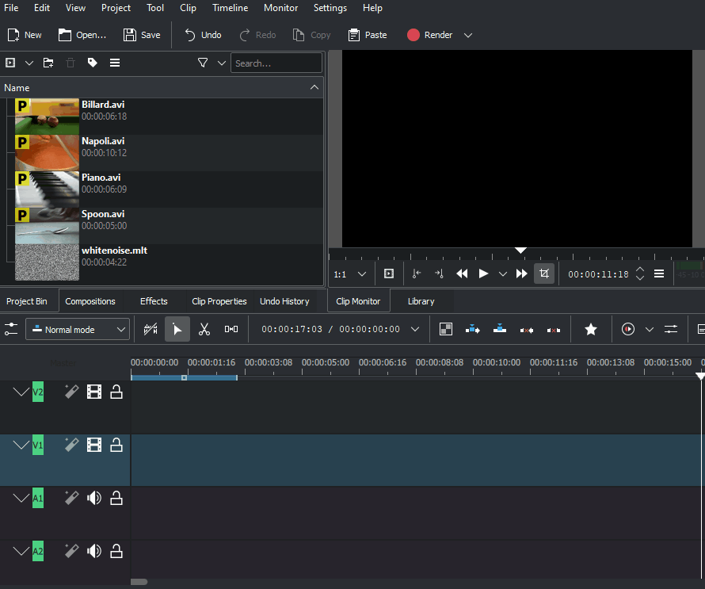New in version 19.08.0: Editing with keyboard shortcuts was introduce
This will speed up the editing work and you can do editing steps that are not possible or not as quick and easy with the mouse. Working with keyboard shortcuts in 19.08 is different as in the former Kdenlive versions. Mouse operations have not changed and working as before. See 3 Point Editing
Seeking through your project¶
The timeline cursor shows your current position in the project. The positions of the cursors on the timeline ruler and Project Monitor are always in sync. Position can be moved in the following ways:
Keyboard shortcut: right / left arrows for one frame, Shift+ right / left for 1 second
Clicking/dragging in the timeline or in an empty area of the timeline.
Clicking/dragging in the Monitors ruler.
Rotating the mouse wheel while the pointer is over the timeline or over the Monitors
Editing the timecode in the Monitors timecode widget
Clicking the up or down arrows on the Monitors timecode widget
Cutting a clip¶
To cut a clip, the easiest way is to place the timeline cursor where you want to cut the clip, then select the clip (left click in it) and use the menu (default shortcut: Shift + R).
Or
Alternatively - use the Spacer Tool.
Resizing a clip¶
A clip can be resized from its start or end by dragging its left or right edge. If you want a more precise resize, you can place the timeline cursor wherever you want the resize to end and use the menu (default shortcut: 1) or (default shortcut: 2)
To even more precisely control the length of a clip, double click it in the timeline and adjust its duration using the Clip duration dialog. You can have frame-level accuracy with this method.

You can also resize a clip by cutting it with the Razor Tool and then deleting the bit you do not want.
Removing Space Between Clips¶
Right click in the space between the clips and choose . Be aware however that if you have clips on multiple tracks in the timeline and they are not grouped, then removing space may disturb the alignment of the clips between the different tracks – the space is only removed from the timeline where you clicked. Under this situation it may be safer to use the Spacer Tool.
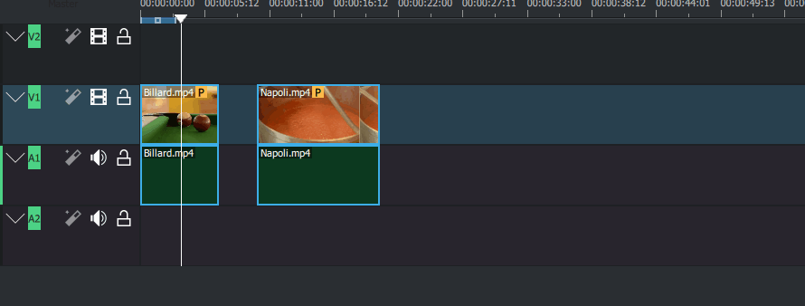Middle Tool Bar¶
There is a toolbar between monitors and the timeline that controls various aspects of the editor.
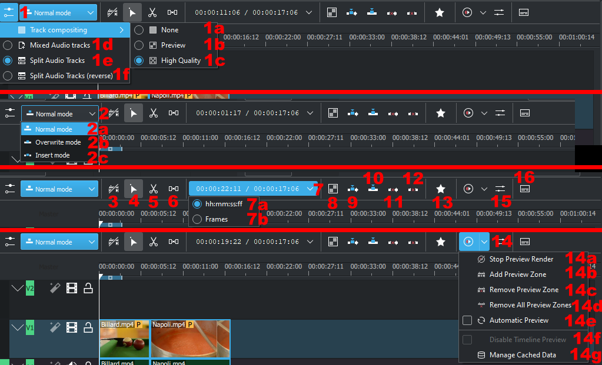Track Compositing drop down.
1b. Track Compositing - Preview
1c. Track Compositing - High Quality
1d. Mixed Audio tracks changes the order in which tracks are displayed to mixed audio and video tracks. For example, from the bottom of the timeline to the top of the timeline: A1, V1, A2, V2, A3, V3
1e. Split Audio tracks changes the order in which tracks are displayed to separate audio and video tracks. For example, from the bottom of the timeline to the top of the timeline: A1, A2, A1, V1, V2, V3
1f. Split Audio tracks (reverse) changes the order in which tracks are displayed to separate audio and video tracks with the audio tracks in reverse order. For example, from the bottom of the timeline to the top of the timeline: A1, A2, A3, V1, V2, V3
Timeline Edit Mode Drop Down
2a. Timeline Edit Mode - Normal Mode
2b. Timeline Edit Mode - Overwrite Mode
2c. Timeline Edit Mode - Insert Mode
These same settings can be found under the menu.
Use timeline zone
/ Do not use timeline zone
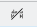for insert (toggles). See Insert & Overwrite Advanced Timeline Editing on Kdenlive Home page.
Tool Group (one of these 3 can be active)
Active buttons are grey.
Selection Tool - Also selected with the ‘S’ hotkey. Allows the selection and manipulation of clips on the timeline
Razor Tool - Also selected with the ‘X’ hotkey, or to cut at the point of the play head use “Shift-R”. This allows a clip to be cut into two clips.
Spacer Tool - Also selected with the ‘M’ hotkey. This tool will select all clips at one point in the timeline and allow them to be shifted at once.
Position indicator - displays the time point or frame number of the location of the hovering mouse on the left side, and the total length of the project on the right side.
7a. hh:mm:ss:ff; Sets the position indicator to display time units
7b. Frames Sets the position indicator to display frames
Mix Clips - allows same-track transitions to be applied between two clips. See `Same Track Transitions`_ for a detailed explination.
Insert Clip Zone in Timeline. See Insert & Overwrite Advanced Timeline Editing on Kdenlive Home page.
Overwrite Clip Zone in Timeline. See Insert & Overwrite Advanced Timeline Editing on Kdenlive Home page.
Extract Timeline Zone
Lift Timeline Zone
Favourite Effects
Start Preview Render
14a. Stop Preview Render
14b. Add Preview Zone
14c. Remove Preview Zone
14d. Remove All Preview Zones
14e. Automatic Preview
14f. Disable Timeline Preview
14g. Manage Cached Data
Items 14, 14a-14g are covered in detail by Timeline preview rendering article on the Kdenlive Home Page
Show/Hide the Audio Mixer tool. The audio mixer tool allows audio to be managed in the project.
Show/Hide the Subtitle Tool. This will show or hide the subtitle track where subtitles can be created or edited in the project.
Bottom Tool Bar¶
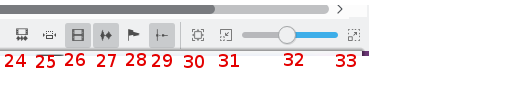Zoom Tools
Zoom Out
Zoom In
Button Descriptions¶
Track Compositing - None¶
When Track Compositing is set to None you will not get tracks with alpha channel information to composite with the other tracks unless an explicit composite or affine transition is added between the clips. This is the behavior that Kdenlive displayed in older ( <= ver 0.9.X).
Track Compositing - Preview¶
When track compositing is set to Preview tracks with alpha channel information will be automatically composited with the other tracks using an algorithm that is somewhat faster than the algorithm used with Track Compositing - HighQuality but which slightly degrades the colors.
Track Compositing - High Quality¶
When track compositing is set to High-Quality tracks with alpha channel information will be automatically composited with the other tracks using an algorithm (qtblend) that is somewhat slower than the algorithm used with Track Compositing - Preview but which retains higher fidelity color information.
Timeline Edit Mode - Normal Mode¶
In this edit mode, you can not drag clips on top of other clips in the same track in the timeline. You can drag them to another track in the timeline but not into the same track at the same time point as an existing clip. Contrast this to overwrite mode.
Timeline Edit Mode - Overwrite Mode¶
In this edit mode, you can drag a clip onto a track where there is an existing clip and the incoming clip will overwrite that portion of the existing clip (or clips) covered by the incoming clip.
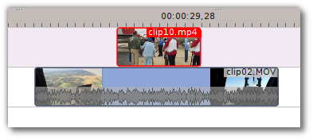 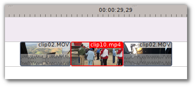In the “After” screenshot above, you can see that the clip which was dragged from the upper track has replaced a portion of the clip on the lower track.
Rearrange clips in the timeline
Performing a rearrange edit. This technique lets you quickly change the order of clips in the timeline.
VIDEO FILE Overwrite-mode.mp4 MISSING
Drag a clip, as you drop it to a new location performs an overwrite edit that overwrites the existing clip.
Timeline Edit Mode - Insert Mode¶
With this mode selected and you drop a selection into the timeline the selection will be inserted into the timeline at the point where the mouse is released. The clip that the selection is dropped on is cut and clips are moved to the right to accommodate the incoming clip.
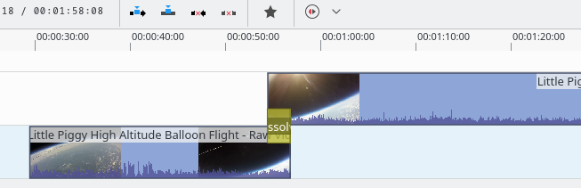 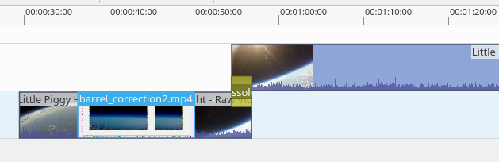 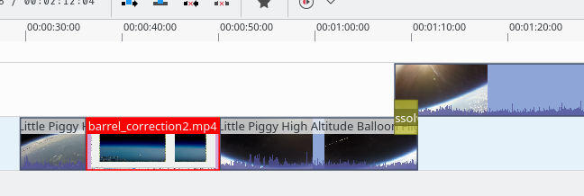Rearrange edit in the timeline
Performing a rearrange edit. Only clips in the destination track are shifted; clips in other tracks are not affected. This technique lets you quickly change the order of clips in the timeline.
It always closes all space in the track.
VIDEO FILE Insert-mode.mp4 MISSING
Drag a clip, as you drop it to a new location. Releasing the clip performs an insert edit that shifts clips in the destination track only.
Selection Tool¶
Use this to select clips in the timeline. The cursor becomes a hand when this tool is active.
Razor Tool¶
Use this to cut clips in the timeline. The cursor becomes a pair of scissors when this tool is active.
Spacer Tool¶
Use this tool (
) to temporarily group separate clips and then drag them around the timeline to create or remove space between clips. Very useful. Experiment with this tool to see how it works.
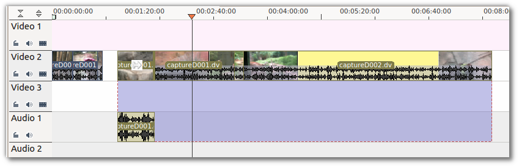{kind=link}
In the above example, these clips are not grouped. However, the spacer tool groups them temporarily for you so you can move them all as a group.
Fit Zoom to Project¶
This will zoom the project out so that it all fits in the timeline window. This is the same function that is triggered by Timeline Menu Menu item, .
Zoom project¶
The magnifying glasses zoom in or out on the timeline. The slider adjusts the zoom by large increments. These same settings are controlled by the menu items, and .
Split Audio and Video Automatically¶
When this is on and you drag a clip to the timeline, the audio in the clip will end up on an audio track and the video on a video track. You can achieve the same result if you select the clip, Clip in Timeline - Right-Click Menu, . When this is off and you drag a clip onto the timeline, both the audio and video tracks are combined into one video track.
Automatic Transitions¶
When active any transitions added to the timeline will have the automatic transition option checked by default. See Transitions
Show Video Thumbnails¶
When on, the video clips in the timeline will contain thumbnails as well as a filename. Otherwise, they just have the clip filename.
When the timeline is zoomed in to the maximum, the video track will show a thumbnail for every frame in the clip. When the timeline is not on maximum zoom, the video track will show a thumbnail for the first and last frame in the clip.
Show Audio Thumbnails¶
When on, the audio clip will have a wave representation of the audio data as well as a filename. Otherwise, they just have the clip filename.
Show marker comments¶
This toggles on and off the display of the comments saved within Clips (the text with the gold background in the example below) and within guides (the text with the purple background).

Snap¶
When this feature is on, dragging the beginning of one clip near to the end of another will result at the end of the first clip snapping into place to be perfectly aligned with the beginning of the second clip. As you move the two ends near to each other, as soon as they get within a certain small distance, they snap together so there is no space and no overlap. Note that this occurs even if the clips are on different tracks in the timeline.
Clips will also snap to the cursor position, markers and guides.
Cutting Footage from multiple aligned tracks - Ripple Delete¶
This is available on the menu under 1 .
Seems missing in Kdenlive 17.04 & 18.04
Mark In and Out points in the Project Monitor, then choose (or Ctrl-X). Kdenlive deletes all footage between the In and Out points in unlocked tracks, slides everything else back to fill the gap, and puts the playhead on the In point.
Subtitle¶
New in version 20.12.0.
The subtitling tool allows you to add and edit subtitles directly in the timeline on a special subtitle track or by using the new subtitle window. You can also import (SRT/ASS) and export (SRT) subtitles.
There are 3 ways to add subtitle:
Menu
Keyboard
Shift+S adds a subtitle.
Icon and Mouse
Click the “subtitle” icon in the timeline toolbar to open the subtitle track in the timeline.
Double-click in the subtitle track to add a subtitle.
Adding and editing text
Add or editing text either directly into the subtitle clip or in the subtitle window.
Adjust the length of subtitle
Grab the end of a subtitle with the mouse and lengthen or shorten it as needed. Set subtitle in/out can be achieved with the same shortcut as to set clip in/out (left/right parenthesis shortcut).
Subtitle window
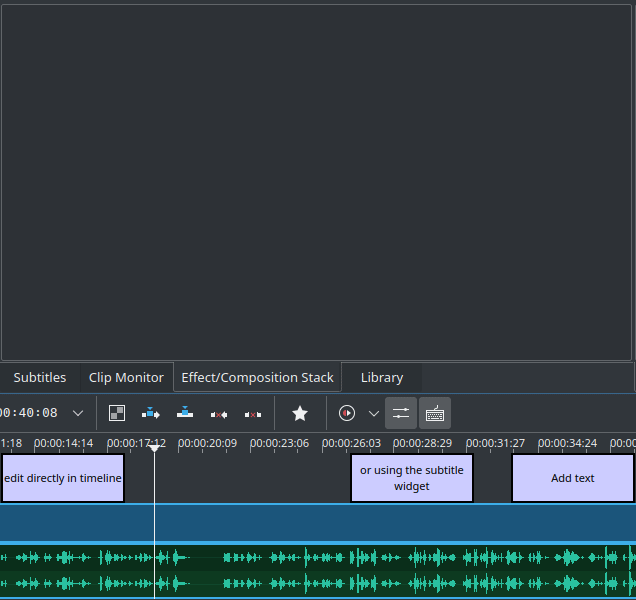The subtitles window allows easier editing and also makes it possible to easily navigate between subtitles with the left/right button.
With the plus sign, you can add subtitles.
The scissors are mostly here for divide subtitles: let’s say your subtitle text is too long and you want to make it 2 different subtitles. Put the cursor in the text widget where you want to cut and click the scissors, it will split the text between 2 different subtitle items. The scissors are only working when the playhead is over the subtitle itself.
The tick adds the text to the subtitle.
Import and export subtitle
Importing SRT and ASS subtitle file:
Exporting SRT subtitles only:
Tip
SRT supports markup for: bold, italic, underline, text color and line break.
<b>text in boldface</b><i>text in italics</i><u>text underlined</u><font color="#00ff00"> text in green</font>you can use the font tag only to change color.And all combined:
<font color="#00ff00"><b><i><u>All combined</u></i></b></font>Line break: Add on the end of each line a
<br>(for break). Now the srt file is stored correct and reopened with the line break. The subtitle in the subtitle window will be all in 1 line after several save but the breaks is working.
Alt+arrow jumps from subtitle to subtitle.
New in version 21.04.0.
Spelling check
Spelling check for subtitle is integrated and shows incorrect words by a red wiggly line. Right-click on the word and you get a list of possible words you can choose by click on it.
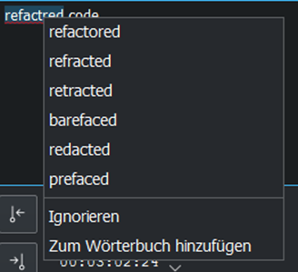Speech to text¶
New in version 21.04.0.
Install Python¶
Python needs to be installed on your computer. Download it from here https://www.python.org/downloads/ for installation on your computer.
Speech recognition requires the vosk and srt python modules
On Linux open a terminal and put in and run: “pip3 install vosk;pip3 install srt”.
On Windows, you can download this batch file (Archive File: Install_vosk_srt.zip). After download double click starts the installations.
Install a language¶
Goto
Click on the link to get a language model
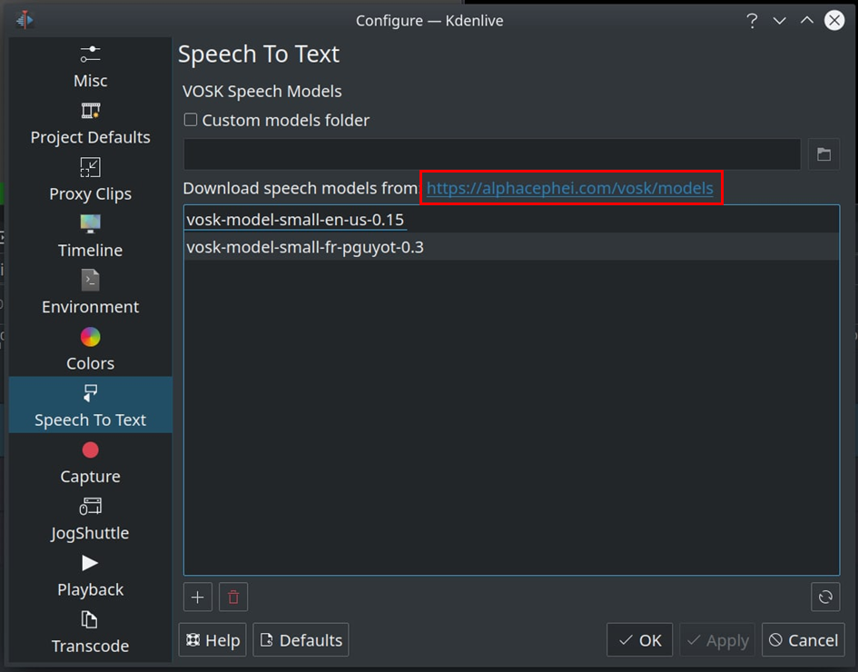Drag & drop the language you want from the vosk-model download page to the model window, and it will download and extract it for you.
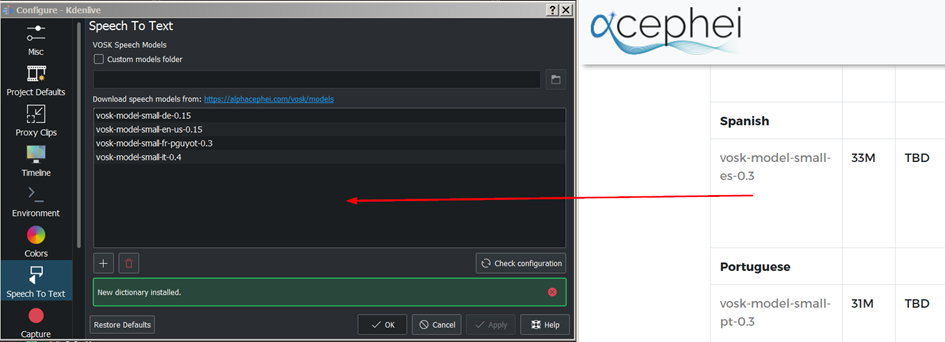If you have problems click on “Check configuration” button.
Speech recognition¶
Creating subtitle by speech recognition
Mark the timeline zone you want to recognize (adjust the blue line).
Click on the “Speech recognition” icon.
Choose the language.
Choose how the selected zone should be applied.
Click “Process”
The subtitle gets created and inserted automatically.
Remark: Only timeline zone is implemented for now in automatic subtitles.
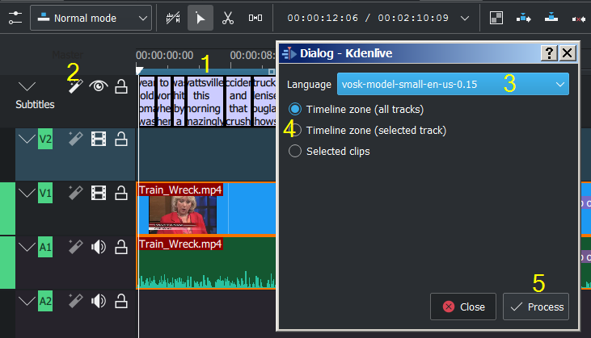Creating clips by speech recognition This is useful for interviews and other speech-related footage. Enable
Select a clip in the project bin.
If needed set in/out point in the clip monitor and enable “selected zone only”. This will only recognize the text inside the zone.
Choose the correct language
Click “start recognition”
Selecting the text you want to either
Put into the timeline
Save as a new clip
Add a Bookmark. You can jump to these bookmarks in the timeline with alt+arrow or edit the bookmark by double click.
Delete the selection.
Here you can search in the text.
And navigate up
Or down in the text.
Warning
Speech to text doesn’t work with version 21.04.2 due to vosk API issues. Use version 21.04.1 or 21.04.3 and later versions.
3 point editing¶
New in version 19.08.0.
3 important points to understand the 3 point editing concept (with keyboard shortcuts):
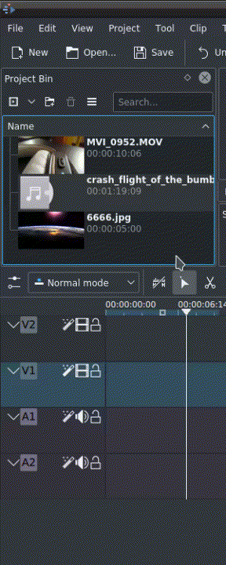Source
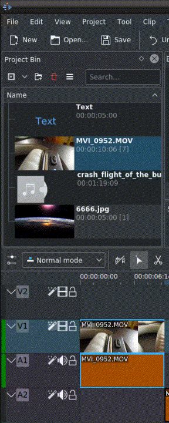On the left of the track head the green vertical lines (V1 or A2). The green line is connected to the source clip in the project bin. Only when a clip is selected in the project bin, the green line shows up depending on the type of the clip (A/V clip, picture/title/color clip, audio clip).
Target
In the track head the target V1 or A1 is active when it’s yellow. An active target track reacts to edit operations like insert a clip even if the source is not active.
The concept is like thinking of connectors
Connect the source (the clip in the project bin) to a target (a track in the timeline). Only when both connectors on the same track are switched on the clip “flow” from the project bin to the timeline.
Be aware
Active target tracks without connected source react on edit operations.
Example of advanced edit
Here is a brief introduction to the 3 point editing system.
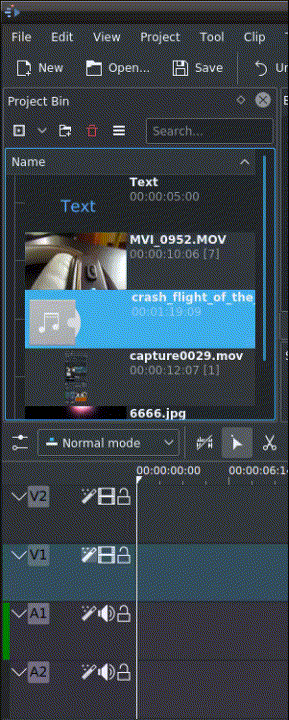Select a clip in the project bin with an up/down arrow
Navigate the clip by the JKL keys or by the left/right arrows and set the IN and the OUT point by the I and O keys.
Hit T to change to the timeline
Select a video or audio track in the timeline (up/down arrow key) and set it as source with Shift+T.
Activate the track as a target with shortcut A (this connects the track to the source)
Hit V (insert) or B (overwrite) to add the clip at the play-head position or to fill the selected area in the timeline if it is active. If you need to activate it use the G key.

In the following example, we want only to insert the audio part of a clip in A2 and we want to create a gap in all the other video and audio tracks:
Activate all the target tracks which contain clips (yellow buttons).
Activate just the audio source on A2
Press V (insert).
- 1
available on bleeding edge version > 0.9.10 (Jan2015)